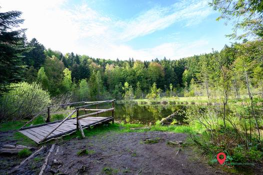

Мертве Озеро
Таємниче озеро Мертве Озеро (Журавлине) розташовується на вершині гори в заповіднику Сколівські Бескиди. Вже не одне століття його оточують таємниці і легенди. А вся справа в незвичайній природі виникнення цієї водойми і його водах: темна поверхня, під якою не видно дна, періодично закипає бульбашками газу, що піднімаються з глибини.
Цікаві факти, через які варто побувати на озері Журавлиному
- Глибину Журавлиного озера ніхто не знає точно. Навіть жителі сусіднього села за три століття його існування так і не змогли її виміряти.
- Назва озера має подвійне значення: по-перше, в його околицях росте багато журавлини, а, по-друге, через відсутність людей поблизу тут часто селяться журавлині сім’ї.
- Мертвим озеро називають ще й через сусідство з болотами, в яких, за легендою, згинуло чимало людей.
- Краса озера та навколишніх лісів заворожує, тому воно стало популярним туристичним об’єктом.
- Посеред Мертвого озера курсує плавучий острів, витканий природою зі старих корчів, гілок дерев і коріння. Побачити його можна завжди в різних частинах водойми.
Місце на карті
Мертве озеро: легенди і правда
За свої темні води, які й справді мають чорний колір, озеро здавна називають Мертвим. А місцеві жителі привласнюють йому чаклунські властивості. Насправді колір води та відсутність життя в озері легко пояснити: свого часу водойма утворилася на місці провалу гірської породи. Навколишні ліси роками скидали листя і гілки в котлован, а потім дорогу до нього пробили гірські ключі. Озеро наповнилося чистою водою, але донні відклади, які продовжують розкладатися на дні, виробляють велику кількість вуглекислого газу і сірководню, в якому не можуть вижити ні риби, ні молюски, ні земноводні. Товстий шар мулу надав колір ночі воді озера – і воно стало називатися Мертвим.
Не тільки озеро, а й інші дива природи
Крім озера в цій частині заповідника є й інші цікаві пам’ятки: відправившись на екскурсію до води мертвою, не забудьте зазирнути до джерела живої води, яке розташоване неподалік. Також варто поглянути на кам’яні валуни гори Ключ, відвідати меморіал «Січовим стрільцям» на її вершині, і прогулятися до Кам'янецького водоспаду.